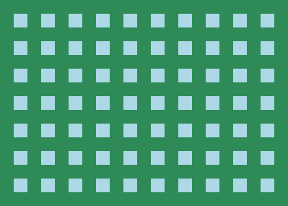
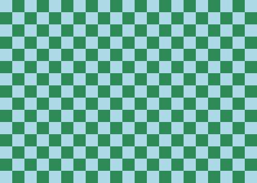
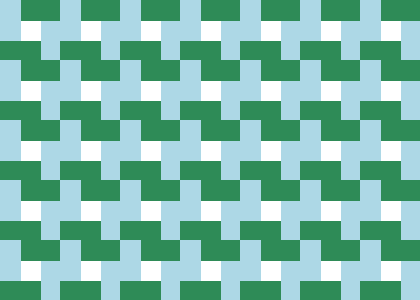

Lab 1: HTML5 Canvas Primitives
The goal of this lab is to begin drawing on the HTML canvas with Javascript. Experiment with the HTML canvas primitives by creating a graphics drawing of your own design.
Step 1: Download the starter code
Download lab1.html (right-click on this link and then choose "Save Link As..."). Open this file in Sublime (or your preferred editor). This file contains some boiler-plate code and one draw method that you'll modify. Study the code and make sure it makes sense.
Step 2: Tile pattern
Inside the function draw(), create a double for loop that goes over all the x values from 0 to canvas.width, and all the y values from 0 to canvas.height. If you run your code now, you should see a completely blue rectangle.
Next modify pixelColor so that it takes the x and y values of the pixel into account to create a grid or a checkerboard pattern. Try to modify the size of the squares without modifying the fillRect arguments. Experiment with different colors and patterns. Here are some examples below:
|

|
|

|
|

|
|
grid pattern
|
|
checkerboard pattern
|
|
windmill pattern
|
Step 3: Create your own design
Comment out the code from Step 2. Add code to the draw function that draws something of your own creation. The only requirements are that it uses at least 4 different shapes and at least 2 different colors. It should also be roughly centered in the canvas and of a reasonable size.
You may refer back to the class notes on how to draw shapes on the canvas, or you may use this guide.
You do not have to turn this lab in, but you are welcome to email me your image (take a screenshot and save as a .png file). I will demo some interesting designs in class. Also make sure your partner and others around you are making progress. For labs, feel free to compare code and share ideas.